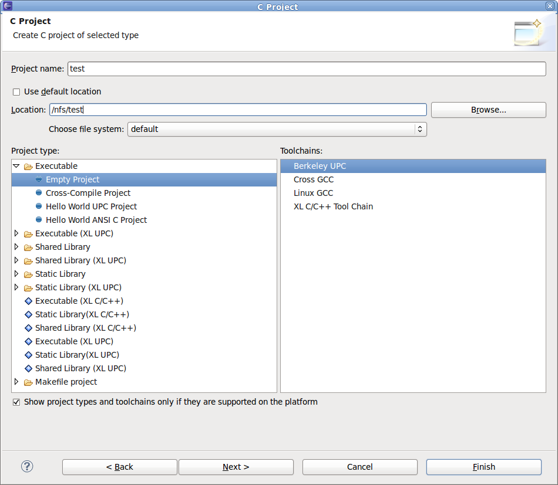

Define an appropriate project, either a C/C++ project using CDT or a FORTRAN project using Photran. You can define either a standard make project or a managed make project.
When you define the project, you should specify the project location as a directory which is shared among all nodes (for example, the directory on NFS, lustre filesystem etc.) where the parallel application will run to ensure SLURM has access to the executable on all nodes. The following image shows how a project can be created using a directory visible to all nodes.
You should use the following compiler invocation commands to invoke the compiler if you want to build a parallel program to run with the SLURM proxy, either in your makefile, or when specifying the compiler and linker in a managed make project.
The following image shows how the compiler is specified for a managed make project. The correct linker should also be specified by clicking the settings for the linker.